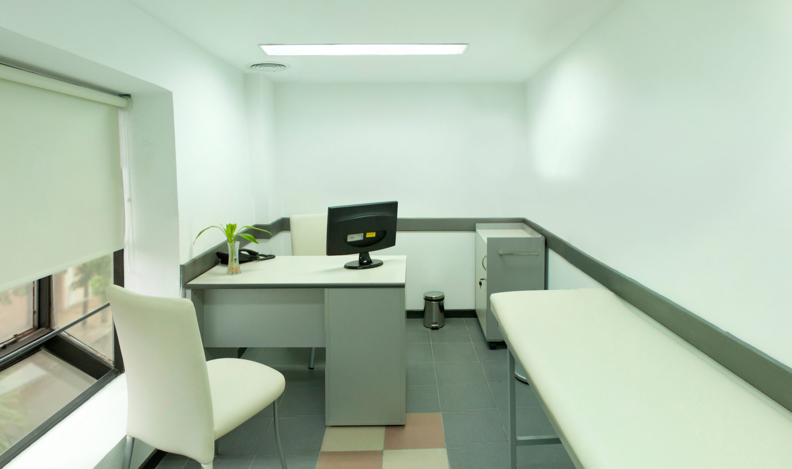

Variedad en espacios para trabajo profesional.

Atendidos por los profesionales más calificados del rubro.

Herramientas digitales para el seguimiento acorde.
Consultorios Médicos
Es nuestra misión poder acompañar a cada uno de nuestros pacientes de la manera más cercana.